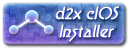
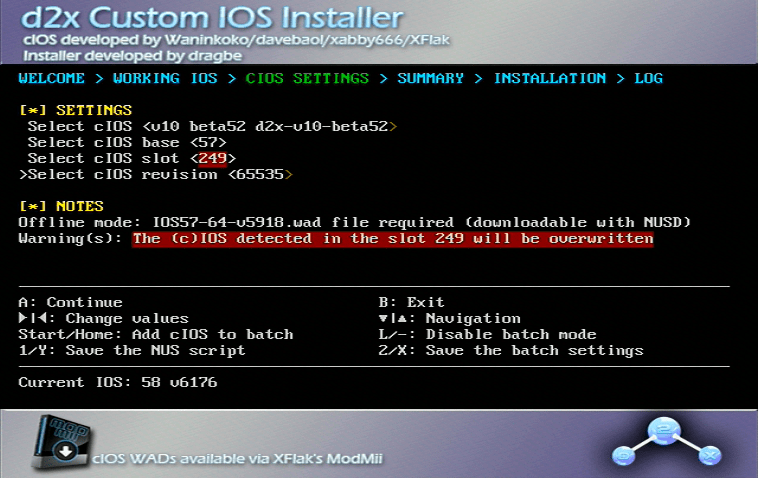
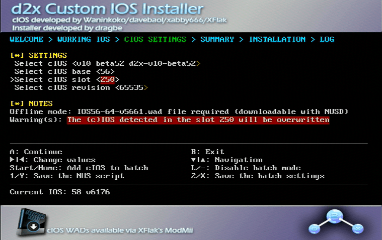

cIOS
Acest tutorial îți va arăta cum să instalezi cIOS (IOS personalizat). Acesta este necesar dacă vrei să încarci jocuri printr-un USB Loader. Unele aplicații homebrew s-ar putea să funcționeze mai bine folosind cIOS.

Dacă ai un Wii U (vWii), urmează acest ghid în schimb pentru a instala cIOS. Orice alt cIOS nu va merge instalat pe vWii.
Dacă ai un Wii mini, instalează acest cIOS în schimb. Orice alt cIOS nu va merge instalat pe Wii mini.
De ce ai nevoie
- Un Wii
- Un card SD sau o unitate USB
- d2x cIOS Installer
Asigură-te că dacă folosești un card SD, comutatorul de blocare este în poziția deblocată, altfel nu vei putea să selectezi opțiunile corecte în instalator
Instrucțiuni
Secțiunea I - Descărcare
- Descarcă d2x cIOS Installer și extrage-l în rădăcina cardului tău SD sau unității tale USB.
- Introduce cardul tău SD sau unitatea ta USB în Wii, și pornește d2x cIOS Installer din Homebrew Channel.
Secțiunea I - Descărcare
- Descarcă, extrage și deschide NUS Downloader.
- Alege “Database”, “IOS”, apoi “IOS57” și alege “v5918”.
- Asigură-te că “Pack WAD” este bifat și că “Patch IOS” nu este bifat.
- Repetă pasul anterior pentru IOS56 v5661 și IOS38 v4123.
- Odată ce ai descărcat toate cele trei IOS-uri, va exista un dosar numit
titlesîn același dosar cu NUS Downloader. Deschide dosarul și navighează prin el până când găsești cele trei fișiere WAD pe care le-ai descărcat. Pune fiecare fișier WAD în rădăcina cardului tău SD sau unității tale USB. - Descarcă d2x cIOS Installer și extrage-l în rădăcina cardului tău SD sau unității tale USB.
- Introduce cardul tău SD sau unitatea ta USB în Wii, și pornește d2x cIOS Installer din Homebrew Channel.
Secțiunea II - Instalare
- Apasă continue, apoi setează opțiunile la următoarele:
Select cIOS: v10 beta52 d2x-v10-beta52
Select cIOS base: 57
Select cIOS slot: 249
Select cIOS version: 65535

- Odată setat, apasă A de două ori pentru a instala.
- Când instalarea este gata, apasă A pentru a te întoarce, și setează opțiunile la următoarele:
Select cIOS: v10 beta52 d2x-v10-beta52
Select cIOS base: 56
Select cIOS slot: 250
Select cIOS version: 65535

- Odată setat, apasă A de două ori pentru a instala.
- Când instalarea este gata, apasă A pentru a te întoarce, și setează opțiunile la următoarele:
Select cIOS: v10 beta52 d2x-v10-beta52
Select cIOS base: 38
Select cIOS slot: 251
Select cIOS version: 65535
- Odată ce este gata, apasă A de două ori din nou pentru a instala, apoi ieși după ce se termină.
Depanare
Deși majoritatea jocurilor ar trebui să meargă direct cu implicitele, unele s-ar putea să necesite folosirea unui cIOS specific pentru a merge, sau să utilizeze anumite funcții din joc.
Exemple includ:
- Folosirea unei tastaturi în Animal Crossing: City Folk.
- Rularea jocului SpongeBob’s Boating Bash.
O lista vastă (deși incompletă) poate fi găsita aici
Pentru a schimba cIOS-ul folosit pentru un joc specific, urmărește aceste instrucțiuni:
- Alege jocul care nu merge.
- Apasă pe Settings.
- Alege
Game Load. - Derulează jos la
Game IOS. - Introduce slotul IOS pe care vrei să-l folosești.
- Încearcă să folosești 250 sau 251, dacă 249 nu merge.
- Apasă ok și încearcă să rulezi jocul.
- Alege jocul care nu merge.
- Apasă iconița cu rotița.
- Du-te la cIOS și folosește săgețile pentru a selecta slotul IOS pe care vrei să-l folosești.
- Încearcă să folosești 250 sau 251, dacă 249 nu merge.
- Apasă Save și încearcă să rulezi jocul.
Opțiuni după finalizare
Continuă la Homebrew Browser
Homebrew Browser este un loc bun de unde să-ți faci rost de aplicații homebrew pe consola ta Wii. Acesta este opțional de instalat.
Continuă la navigarea site-ului
Avem multe alte tutoriale care s-ar putea să-ți placă.
Acum poți folosi homebrew precum USB Loader GX și Wiiflow.